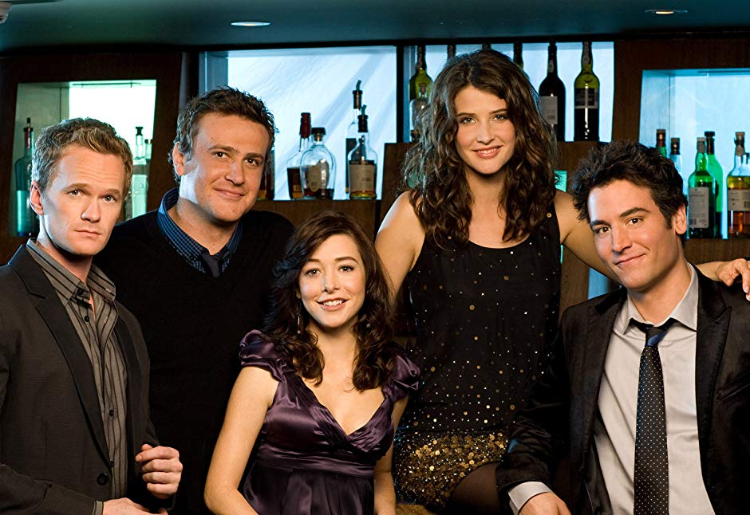

About Ted
Ted Mosby is the youngest architect situated in New York City. He takes 8 years and 9 seasons to tell his kids how he met his mother. Ted is someone a person must aspire to be, one should never give up no matter what goes wrong. There is always hope and as soon as you close a door, you find that a lot of new ones have started to open! Life can be really unexpected so cherish whatever you have because you never know what is going to happen next. If you think someone is the one, make sure you do not let go of that person.
Ted's Characteristics
- Smart
- Funny
- Caring
- Optimistic
- Friendzoned
A Photo of Ted Mosby with his friends
(from left to right)
Here, we can see Ted sitting with his friends - Barney Stinson, Marshall Erikson, Lilly Aldrin and Robin Scherbatsky